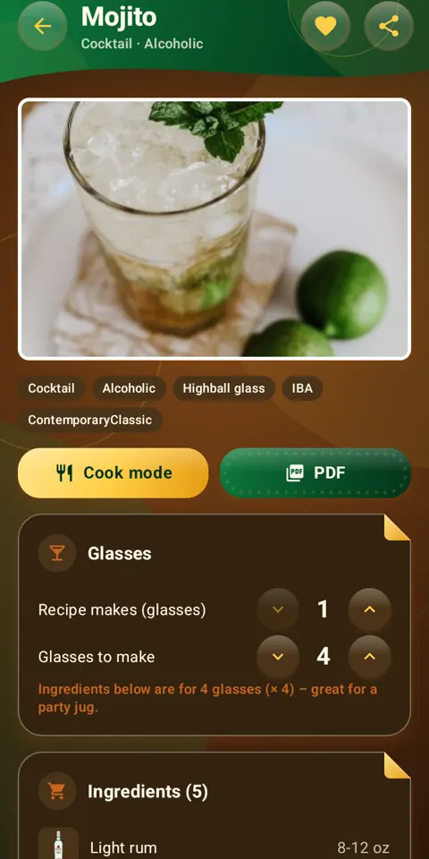
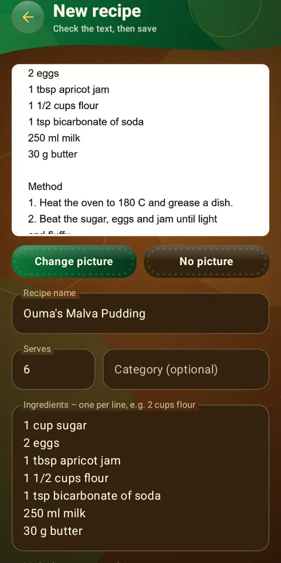
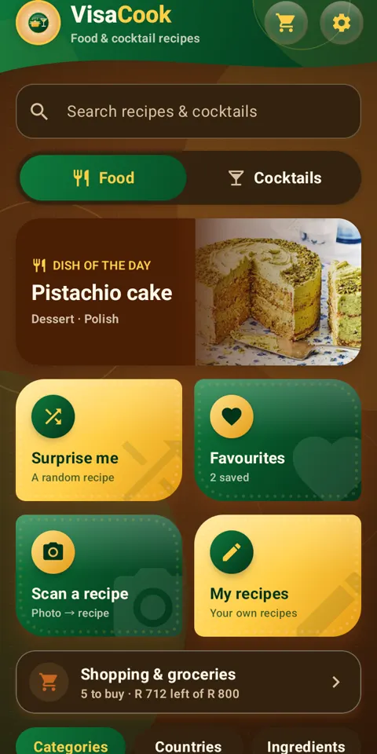
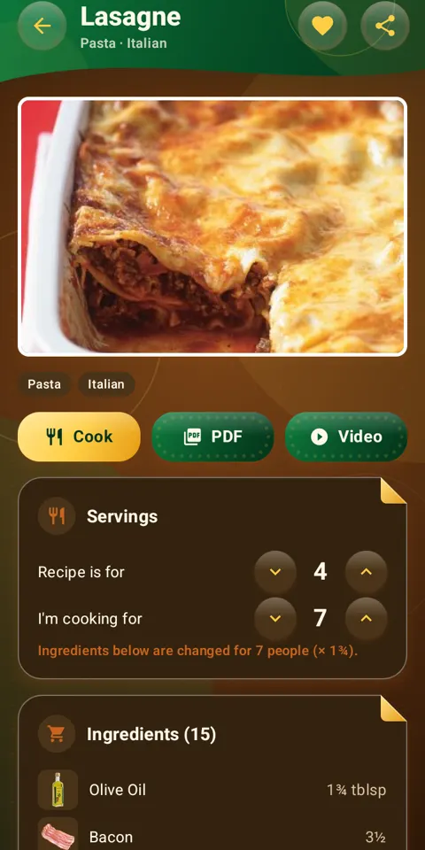
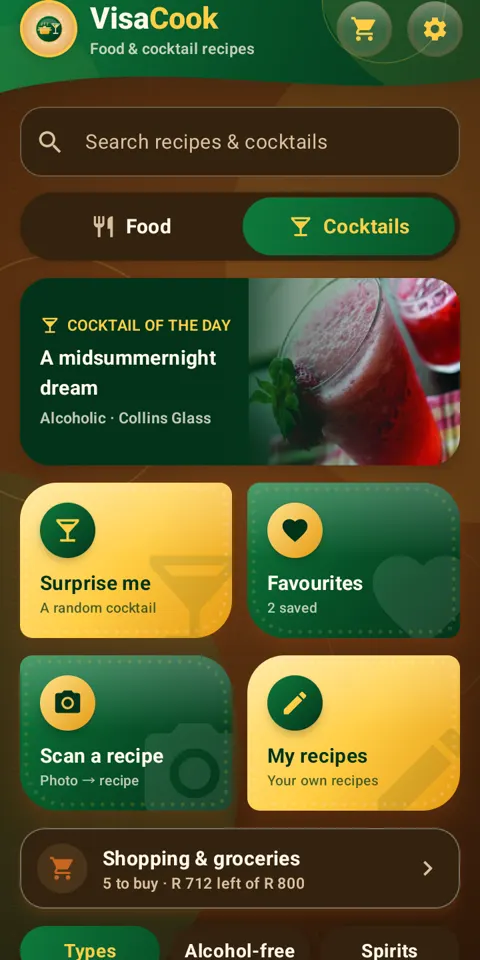
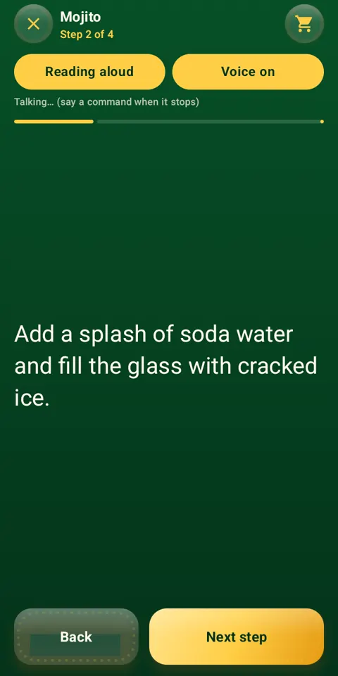

Recipes from everywhereFree
Search by name, browse by category, country or the ingredient already in your fridge. Or tap Surprise me.
Recipes and cocktails from around the world, amounts that work out themselves, Ouma's recipe card scanned in a snap – and a grocery list that keeps you on budget.







From a Tuesday-night lasagne to cocktails for the braai – VisaCook has it covered.
Search by name, browse by category, country or the ingredient already in your fridge. Or tap Surprise me.
Pick a spirit you have and see every cocktail you can make – plus alcohol-free drinks for everyone.
Recipe for 4, feeding 7? Every amount works itself out – cups, spoons, grams and fractions.
Photograph a cookbook page or Ouma's notes. VisaCook turns it into a recipe, read on your phone.
Big steps, screen stays on, every step read aloud. Just say “next”, “back” or “ingredients”.
Set a budget, guess the prices, tick items into the trolley and see what's left – no surprises at the till.
Here's a full cook, start to finish.
Search, browse by Categories, Countries or Ingredients – or tap Surprise me. The dish of the day waits at the top.
Under Servings, change I'm cooking for. Every ingredient amount changes with it.
Tap the cart to add the ingredients to your Shopping & groceries list. Set a budget and tick items as they go into the trolley Pro.
Tap Cook. One big step at a time, read aloud. Say “next” with flour on your hands Pro.
Flip to Cocktails, pick a Mojito, set Glasses to make to 4 – the jug is sorted.
💡 Free keeps 3 of your own recipes; Pro keeps as many as you like.
💡 With VisaSched, tonight's dinner can open by itself at 5 pm.
| What you get | Free | Pro |
|---|---|---|
| Recipes | ||
| Recipes & cocktails from around the world, mocktails | Yes | Yes |
| Servings calculator | Yes | Yes |
| Scan your own recipes | Yes | Yes |
| Works offline | Yes | Yes |
| Favourites | 10 | Unlimited |
| Own recipes | 3 | Unlimited |
| Pro powers | ||
| Hands-free Cook mode with voice | No | Yes |
| Dinner plan for the month | No | Yes |
| Grocery list with a budget | No | Yes |
| Recipe shopping list & WhatsApp | No | Yes |
| Recipe to PDF | No | Yes |
| No ads | No | Yes |
Google Play shows the exact price for your country. No subscription, ever.
No account, no sign-up. Scanned recipes are read on your phone, and your lists and plans never leave it.
Recipes and pictures come from TheMealDB.com and TheCocktailDB.com – plus your own scanned recipes.
Your favourites and every recipe you've opened are saved, so they open offline.
There are cocktail recipes (no sales), so VisaCook is for adults 18+. Please enjoy responsibly – there are plenty of mocktails too.
No. Use the same Google account and tap Restore purchase in Settings.
Every Visa app works on its own – and they find each other by themselves. VisaSched can even start the others at the right moment.